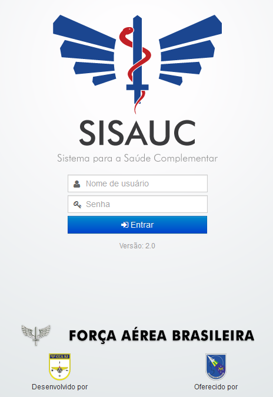

O acesso ao Sistema se faz através do navegador Mozilla Firefox na sua versão mais atual via Intraer.

Fig.2 Tela de entrada no sistema
Inicialmente a senha será igual ao login devendo ser modificada após o primeiro acesso.

Janela que se abre para alteração da senha

Indicador de força da senha
A senha poderá ser alfanumérica.
Um indicador mostrará a força da senha(Fraca, Razoável e Forte).
Após o preenchimento dos campos clique em () para atualizar a senha.